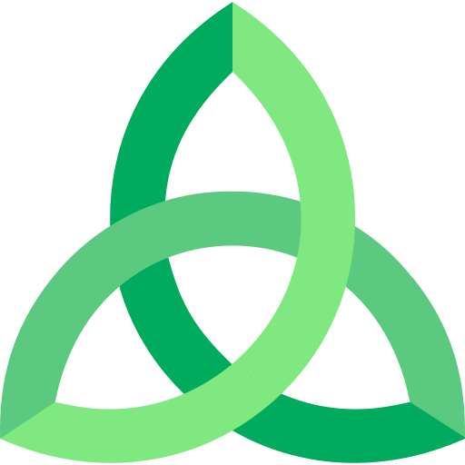

¡Muchas gracias! 💗
Con tu apoyo sostengo horas reales de escritura y edición, y también mis proyectos (como fueron deforestación en San Luis, experimentos abiertos para la UNSL). 🌱
Hoy además dedico gran parte de mi energía a mi tesis de magnetobiología, un área emergente que busca entender cómo los campos magnéticos interactúan con los sistemas vivos.— Kier
